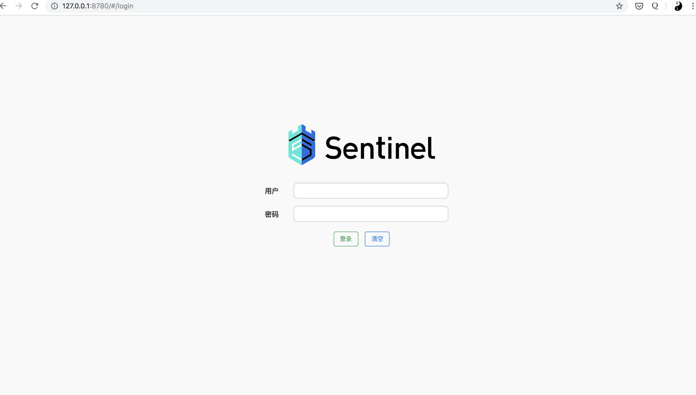

一直在用hystrix做熔断降级，但是无奈hystrix官方已经不再维护了，sentinel背后是阿里巴巴公司，并且一直在维护sentinel，所以先了解下，hystrix不够用时，可以换成sentinel
并且特性丰富，这里就使用如下两个核心功能
- 熔断
- 流控
启动Sentinel控制台
sentinel的控制台是由spring boot开发，特殊需求可以修改源码定制，源码参考：sentinel-dashboard
可以使用docker一键启动控制台
编写sentinel-dashboard的Dockerfile
FROM openjdk:8-jdk-alpine
ADD https://github.com/alibaba/Sentinel/releases/download/1.6.0/sentinel-dashboard-1.6.0.jar /sentinel-dashboard-1.6.0.jar
ENTRYPOINT ["java", "-Dserver.port=8080", "-Dcsp.sentinel.dashboard.server=localhost:8080", "-Dproject.name=sentinel-dashboard", "-jar", "/sentinel-dashboard-1.6.0.jar", "-Dfile.encoding=utf-8"]
构建sentinel-dashboard镜像：docker build -t sentinel-dashboard . 然后启动
docker run --name sentinel-dashboard \
-it --rm -p 8719:8719 -p 8780:8080 sentinel-dashboard
其中8080是sentinel web控制界面端口，8719是sentinel应用端和控制台通信端口，参考配置控制台信息
打开 本机ip:8780 查看效果，默认的用户名密码都是 sentinel

创建测试项目并进行配置
在spring boot里集成sentinel比较容易，找个现有的spring boot的项目，或者去https://start.spring.io/创建一个即可
引入sentinel包，这个包用来进行熔断控制，同时会和sentinel控制台进行通信
<!-- https://mvnrepository.com/artifact/org.springframework.cloud/spring-cloud-starter-alibaba-sentinel -->
<dependency>
<groupId>org.springframework.cloud</groupId>
<artifactId>spring-cloud-starter-alibaba-sentinel</artifactId>
<version>0.9.0.RELEASE</version>
</dependency>
注意修改pom.xml文件后记得reimport一下
在配置里加上和sentinel控制台通信的配置：src/main/resources/application.properties
spring.application.name=MySentinel
spring.cloud.sentinel.eager= true
spring.cloud.sentinel.transport.port= 8720
spring.cloud.sentinel.transport.dashboard= 127.0.0.1:8780
spring.cloud.sentinel.transport.heartbeat-interval-ms= 500
注意这里的8720端口是应用端的sentinel和sentinel控制台通信的端口
启动项目在sentinel控制台查看效果
可以看到项目已经成功和sentinel控制台建立了通信
sentinel可以对多个http客户端进行熔断，参考：Feign & RestTemplate支持
这里使用最常用的RestTemplate来进行请求
在spring boot main方法所在类里配置允许sentinel对RestTemplate进行熔断
核心代码如下：
@Bean
@SentinelRestTemplate
public RestTemplate restTemplate() {
return new RestTemplate();
}
这个SentinelRestTemplate注解有几个事件回调的参数，可以在熔断时执行自定义的处理逻辑，参考：RestTemplate 支持
有时间可以去详细研究下
编写熔断测试代码
在项目里编写测试控制器比如 MyController.java
核心代码如下
@RestController
@RequestMapping("test")
public class MyController {
@GetMapping(value = "/hello")
@SentinelResource("hello")
public String hello() {
return "Hello Sentinel";
}
}
SentinelResource注解里的值是资源标识符，可以为这个资源标识符指定限流，熔断规则等
在浏览器里请求这个地址，然后查看sentinel控制台
可以看到sentinel控制台已经成功监控到了这个测试的url
降级测试
编写一个控制器路由，让这个路由能够触发降级阈值，核心代码如下：
@GetMapping(value = "/mye")
@SentinelResource("mye")
public String mye() {
if (true) {
throw new RuntimeException("mye");
}
return "mye Sentinel";
}
可以看到这段代码是会100%抛出异常
配置降级规则
点击 降级规则->新作降级规则 按钮新增降级规则
右键新窗口可以查看大图，这个熔断规则是任务当请求里的异常比例超过50%后，熔断接口30秒
然后多次请求这个异常接口，查看控制台日志，在几次异常后，可以看到sentinel已经开始熔断保护这个接口了
限流测试
编写一个输出字符串的接口来测试，核心代码如下：
@GetMapping(value = "/myrate")
@SentinelResource("myrate")
public String myrate() {
return "myrate Sentinel";
}
添加限流规则
这里为了看到效果，阈值设置得比较极端：qps超过1秒就限流
然后在浏览器里访问这个接口，按住ctrl+r模拟频繁访问的效果，因为阈值设置得比较极端，立刻就可以在应用控制台里看到已经触发了sentinel的限流保护机制了
页面上也开始提示No message了
一些注意的点
目前暂未发现sentinel的全局熔断功能，每个api的熔断需要手动配置，这种情况下就可以同时使用hystrix和sentinel，或者对sentinel进行二次开发。
测试时注意端口不要冲突了，setinel控制台占用了两个端口(8719, 8080)，应用也会占用两个端口(8720, 8666), 8666应用web端口可以自行设置
应用的sentinel客户端会缓存sentinel控制台的熔断规则，如果sentinel控制台宕机了，应用还会继续使用缓存的熔断规则进行熔断。可以重启应用让熔断规则失效
docker的sentinel默认重启后熔断规则会丢失，如果保存熔断规则需要配置数据源，参考动态数据源支持